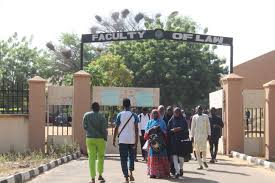

Campus News and Developments
Published on January 3, 2025
Significant developments are taking place on campus, including infrastructure upgrades, technology improvements, and policy changes. The university is upgrading its classrooms and laboratories to create more modern and efficient learning spaces. Additionally, there are ongoing efforts to improve campus safety with better lighting and security systems. Students are also being updated on new policies regarding student conduct, academic integrity, and the use of university facilities. These changes are aimed at creating a better environment for both students and faculty.
Back to News